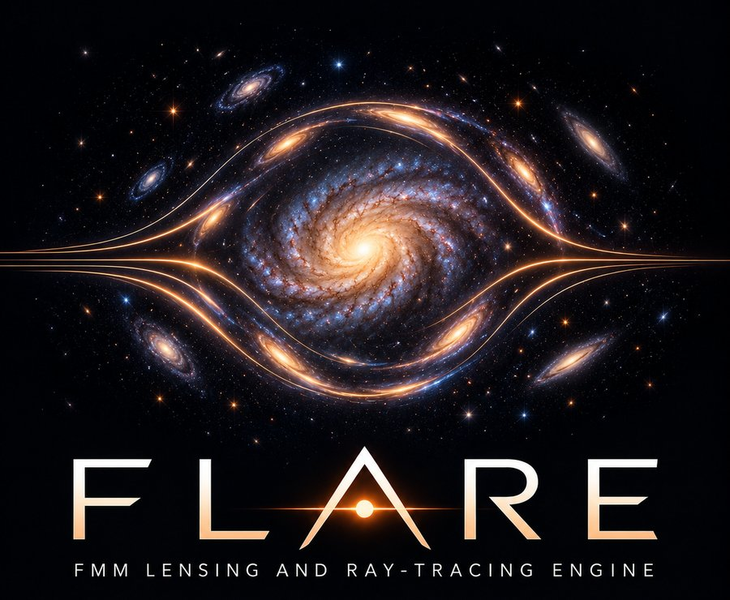

FLARE
The core engine: projection of the FMM field onto lens planes, smooth interpolation, adaptive single- and multi-plane ray tracing, lensing maps, image finding and time delays.
Core engine
A ray-tracing engine that turns the particles of a cosmological simulation into the images and maps an observer of a strong gravitational lens would see.
FLARE (FMM Lensing And Ray-tracing Engine) computes the gravitational field of a simulated galaxy or cluster with a fast multipole (FMM) solver built on the SWIFT code, then traces light from background sources through it. It works directly with particle-based simulations such as SWIFT, COLIBRE and FLAMINGO, so the lenses inherit the full complexity of galaxy formation, including baryons, substructure and line-of-sight structure, rather than an idealised analytic profile.
The engine is designed so that the deflection field and its derivatives stay smooth and consistent with one another. Lensed images and magnification maps are then free of artefacts from the underlying grid. This matters when simulated lenses are used to train and test machine-learning inference, because a network can otherwise learn the grid instead of the physics.
The core engine: projection of the FMM field onto lens planes, smooth interpolation, adaptive single- and multi-plane ray tracing, lensing maps, image finding and time delays.
Core engineThe full feature set: survey and instrument layers (PSFs, noise, coadds), weak-lensing catalogues, microlensing, wave optics, radio interferometry and simulation I/O. Features move into the core once they mature.
Development lineA controlled benchmark of model misspecification in simulation-based inference of dark-matter substructure, using galaxies from the COLIBRE hydrodynamical simulations rendered with FLARE.
Inference benchmarkThe code is in active development and will be released alongside the papers below.
The core ray-tracing method and its accuracy against direct summation.
In preparationTesting simulation-based substructure inference on realistic simulated lenses.
In preparationSurvey layers, multi-plane lightcones, microlensing, wave optics and more.
In preparation